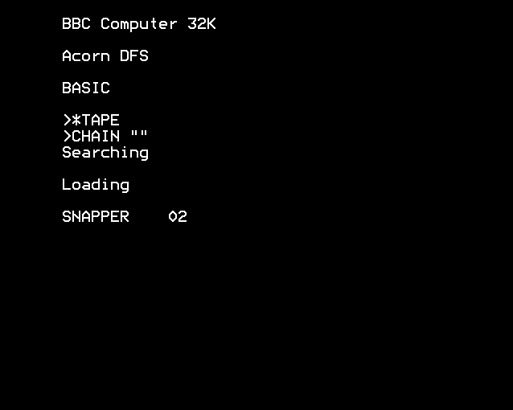

OSBYTE 140, 141, 143; OSARGS entry; OSFILE entry; OSFIND entry; OSBGET entry; OSBPUT entry; File system vector table; FSC entry point; Setup tape options; Load and save file; Copy filename; *RUN; *CAT; *OPT; Search for block; Open a file; Save a block to tape - 1107 bytes (6.7%)
- §1. The tape (and ROM) block format
- §2. OSBYTE 140 - Select TAPE file system, and OSBYTE 141 - Select ROM file system
- §3. Setup cassette options
- §4. Set tape baud
- §5. OSBYTE 143 - Pass service commands to sideways ROMs
- §6. OSARGS - Read or write a file's attributes
- §7. Filing system routine table
- §8. FSC - File System Control
- §9. *LOAD or *RUN a file
- §10. checkFileAttributes
- §11. File locked
- §12. checkAndSetEscapeEffect
- §13. Reached final block
- §14. retryAfterFailure
- §15. Copy filename from XY
- §16. terminateFilename
- §17. OSFILE
- §18. Save a file to tape
- §19. starRunEntryPoint
- §20. sendExecAddressToRunFromTube
- §21. starCatEntryPoint
- §22. Clear tape status bits
- §23. setTapeEOFStatus
- §24. Set tape status bits
- §25. Search for the next block, checking for Tape or ROM
- §26. searchForBlockReadHeaderAndCompare
- §27. Finish reading block and continue
- §28. OSFIND - Open or close a file
- §29. Open a file
- §30. Open a file for output
- §31. closeFileThatsOpenForOutput
- §32. saveSequentialAccessBlockToTape
- §33. OSBGET - get byte from file
- §34. eofErrorMessage
- §35. OSBPUT - Write a byte to file
- §36. *OPT X,Y
- §37. opt1
- §38. opt2
- §39. tapeSetInterblockGap
- §40. restoreDefaultOPTs
- §41. Tape opt byte table
§1. The tape (and ROM) block format.
The cassette filing system uses a variant of the 1976 Kansas City standard. See https://en.wikipedia.org/wiki/Kansas_City_standard Tape signals are a sequence of binary tones, either 2400Hz (representing a set bit) or 1200Hz (representing a clear bit). These tones can be recorded and read at a speed of either 1200 baud or 300 baud. Files are stored on tape as a sequence of 'blocks', each holding (up to) 256 bytes of program data. The first block is written with a five second carrier tone (2400 Hz) at the start. Subsequent blocks start with a shorter carrier tone. Each block continues as follows: $2A - synchronisation byte (%00101010 alternating ones and zeroes) - (see .fsSynchronisationByte) <1 to 10 bytes> - filename $00 - filename terminator <4 bytes> - load address <4 bytes> - execution address <2 bytes> - block number <2 bytes> - block length <1 byte> - block flag (bit 7 set for the final block; bit 0 means *RUN only) <4 bytes> - TAPE: four $00 bytes (unused) - ROMFS: address of end byte of file <2 bytes> - CRC on header (all bytes before here except the synchronisation byte) <0 to 256 bytes> - data <2 bytes> - CRC on data (all data bytes) The ROM filing system uses a similar format of block, but with shortcuts to save ROM space. The first block is as above. Subsequent blocks just have a single byte header of $23. The end of all the ROM's data is marked with a single byte $2B. For an example of what the cassette sounds like, see http://playuef.8bitkick.cc
§2. OSBYTE 140 - Select TAPE file system, and OSBYTE 141 - Select ROM file system.
On Entry: A = 140 to select TAPE filing system A = 141 to select ROM filing system
.osbyte140EntryPoint = $f135 .osbyte141EntryPoint = $f135 EOR #140 A=0 for *TAPE; A=1 for *ROM .setTapeOrROMFS = $f137 ASL double it STA .tapeOrROMSwitch store it in filing system flag store CPX #3 compare with 300 baud JMP .setupTapeBaudRate
Called after power on, hard or soft BREAK. See .tapeOptionsByte for the details of the options. On Entry: Z set for 1200 baud Z clear for 300 baud
.setupTapeOptions = $f140 PHP save flags LDA #%10100001 set sequential access abort if error, no messages STA .tapeOptionsByte set load/save retry if error, short messages LDA #25 set interblock gap (2.5 seconds) STA .tapeSequentialAccessInterBlockGap and store it PLP get back flags fall through...
On Entry: Z set for 300 baud Z clear for 1200 baud
.setupTapeBaudRate = $f14b PHP push flags LDA #6 get close files command to FSCV JSR .passToCurrentFilingSystem and FSCV LDX #6 PLP get back flags BEQ + if (Z set on entry) then branch DEX decrement X + STX .tapeBaudRate set current baud rate: X=5 means 1200 baud; X=6 means 300 baud Reset the file based vectors (FILEV; ARGSV; BGETV; BPUTV; GBPBV; FINDV; FSCV) to default values LDX #14 Loop counter - LDA .defaultFileSystemVectors - 1,X } STA .vectorFILEV - 1,X } Reset vectors for file related } operations DEX } BNE - } STX .fsReadProgressState progress flag = 0 LDX #.romServiceCallVectorsClaimed set X to make a Paged ROM service call 'Vectors Claimed' used after a new filing system overwrites the current set of vectors. fall through...
§5. OSBYTE 143 - Pass service commands to sideways ROMs.
On Entry: X = command number, see .romServiceCallAbsoluteWorkspaceClaim On Exit: A = X = zero if a ROM chooses to handle the call; or 255 otherwise Y = result from ROM
.osbyte143EntryPoint = $f168 LDA .currentlySelectedROM get current ROM number PHA store it TXA command in A LDX #15 set X=15 send commands loop - INC .romTypeTable,X } read bit 7 of rom type DEC .romTypeTable,X } which indicates if it has a } service routine (all user ROMs except BASIC should have a service routine) BPL + if (not service routine) then branch (skips the BASIC ROM) STX .currentlySelectedROM store ROM number STX .romSelectRegister switch the ROM into the memory map JSR .romServiceEntry and jump to the service entry TAX on exit put A in X BEQ .romChecksFinished if (zero, i.e. command recognised by ROM) then branch (restore current ROM selection and exit) LDX .currentlySelectedROM point to next lower ROM + DEX BPL - and go round loop again .romChecksFinished = $f186 PLA get back original ROM number STA .currentlySelectedROM store it in Ram copy STA .romSelectRegister switch the original ROM into the memory map TXA put X back in A RTS
§6. OSARGS - Read or write a file's attributes.
On Entry: In this default implementation, we only need to cover TAPE and ROM filing systems. We only implement A=0,Y=0, which returns the filing system number in A. On Exit: A = 0 no filing system present A = 1 1200 baud tape filing system A = 2 300 baud tape filing system A = 3 ROM filing system [ Note: Beyond the scope of this OS, implemented by optional Paged ROMs: A = 4 Disc file system A = 5 Econet (Networking) file system A = 6 Telesoftware (Teletext/Prestel) file system A = 7 IEEE filing system A = 8 ADFS filing system A = 9 Host filing system A = 10 Videodisc filing system See http://www.sprow.co.uk/bbc/library/fsids.txt for more filing system ids. ]
.osargsEntryPoint = $f18e ORA #0 BNE .exit27 if (A != 0) then branch (return) CPY #0 BNE .exit27 if (Y != 0) then branch (return) LDA .tapeBaudRate get current baud rate: 1200 ; 300 ; ROM baud ; baud ; tape ; tape ; 5 ; 6 ; 5 [Incidentally, this would do the same thing as below, but using four fewer bytes: ORA .tapeOrROMSwitch 5 ; 6 ; 7 AND #3 1 ; 2 ; 3 RTS] AND #$FB 1 ; 2 ; 1 ORA .tapeOrROMSwitch 1 ; 2 ; 3 ASL 2 ; 4 ; 6 ORA .tapeOrROMSwitch 2 ; 4 ; 6 LSR 1 ; 2 ; 3 .exit27 = $f1a2 RTS
§7. Filing system routine table.
The FSC routine (see below) jumps to the relevant address depending on the accumulator.
.fileSystemControlRoutineTable = $f1a3 !word .starOptEntryPoint - 1 *OPT !word .checkEOFEntryPoint - 1 check EOF !word .starRunEntryPoint - 1 */ !word .badCommandError - 1 'Bad command' if ROMs and FS don't want it !word .starRunEntryPoint - 1 *RUN !word .starCatEntryPoint - 1 *CAT !word .osbyte119EntryPoint - 1 osbyte 119 (close SPOOL and EXEC files, to get ready for a new FS)
§8. FSC - File System Control.
On Entry A is reason code. Only values 0-6 are handled: A=0 A *OPT command has been issued. X and Y are the 2 parameters A=1 EOF is being checked. On Entry: X=File handle On Exit: X=FF means EOF else 00 A=2 A */ command has been issued A=3 An unrecognised OS command has been issued. X,Y point at command A=4 A *RUN command has been issued X,Y point at filename A=5 A *CAT cammand has been issued X,Y point to rest of command A=6 New filing system is about to take over. Close *SPOOL and *EXEC files Just for reference, these are not implemented in OS (to be implemented by Filing System Paged ROMs): A=7 return file handle range (X=minimum; Y=maximum) A=8 OS has received a star command A=9 *EX command A=10 *INFO A=11 *RUN command for library A=12 *RENAME command See NAUG Section 16.1.7, Page 256-7
.fscEntryPoint = $f1b1 CMP #7 } BCS .exit27 } if A>=7 then branch (exit) STX .fsTempStorage save X ASL A=A*2 TAX X=A to get offset LDA .fileSystemControlRoutineTable + 1,X get high byte of address PHA push it LDA .fileSystemControlRoutineTable,X get low byte of address PHA push it LDX .fsTempStorage restore X RTS this now jumps to (the address got from the table) + 1

On Entry: A=0 *RUN the file A=$FF *LOAD the named file and read its catalogue information See:
See:
.loadFile = $f1c4 PHP save flags on stack PHA save A on stack JSR .claimSerialSystemForLoadSave claim serial system for cassette we can't use the cassette and the RS-423 system at the same time so we select the cassette here. LDA .fsExecutionAddressLow execution address low PHA save A on stack JSR .searchForFile search for file PLA get back A BEQ .checkFileAttributes if (A = 0) then branch LDX #3 X=3, loop counter LDA #$FF A=$FF - PHA save A on stack LDA .fsLoadAddressLow,X get load address STA .loadAddressLow,X store it as current load address PLA get back A AND .loadAddressLow,X DEX X=X-1 BPL - until all 4 bytes copied [peculiarly, the code makes a special point to check for a load address of $FFFFFFFF and signals an error if it occurs. Why?] CMP #$FF check if all the bytes of the load address are $FF BNE .checkFileAttributes if (address is valid, i.e. not all four bytes $FF) then branch (continue) handle error because load address is $FFFFFFFF JSR .beepAndCancelTapeOperation sound bell, reset ACIA and motor off JMP .brkBadAddress show 'Bad address' error
.checkFileAttributes = $f1ed LDA .fsBlockFlagByte block flag LSR set carry from bit 0 (file locked) PLA get back A BEQ .checkAndSetEscapeEffect if (A = 0) then branch (entry is from star run) BCC .loadOrRun if (carry clear, i.e. not locked) then branch fall through...
A locked file is one with bit zero set on the block flag byte (see .fsBlockFlagByte) Locked files can only be *RUN, not *LOADed. This is a form of copy protection on cassette tapes. See Chapter 18: Tape and ROM Filing systems for data format.
.fileLocked = $f1f6 JSR .cancelTapeOperationAndMotor BRK !byte $D5 error number !text "Locked",0 'Locked' error message and zero terminator
.checkAndSetEscapeEffect = $f202 BCC .loadOrRun if (carry clear) then branch (load) LDA #3 A=3 STA .escapeAndBreakEffect store to cause ESCAPE disable and memory clear on break .loadOrRun = $f209 LDA #%00110000 check bits 4 and 5 See .tapeCurrentOptionsByte for description of the options AND .tapeCurrentOptionsByte check for 'ignore errors' BEQ + if (ignore errors) then branch LDA .checksumIsValidFlag get checksum result BNE .checksumFail if (checksum failed) then branch + TYA A=Y PHA save A on stack JSR .startSendToSecondProcessor send to second processor if present PLA get back A TAY Y=A JSR .setStateForLoadingBlockDataOrReset set state to read block data .checksumFail = $f21d JSR .loadBlock load block from tape BNE .retryAfterFailure if (not found) then branch (retry) JSR .incrementBlockNumbers increment current block number + BIT .fsBlockFlagByte block flag BMI .reachedFinalBlock if (bit 7 set, i.e. this is the final block) then branch JSR .incrementLoadOrSaveAddress increment current load address JSR .readBlockHeader read block header BNE .loadOrRun if (non zero) then branch (loop back) fall through...
Stores the tape file length (low/high) and two zeros into the OSFILE parameter block. Note the bugs below though. John Kortink found a couple of bugs in this routine. See http://mdfs.net/Archive/BBCMicro/2006/10/14/174712.htm People have unwittingly hit the second of these bugs: See https://stardot.org.uk/forums/viewtopic.php?f=54&t=13481 See http://www.retrosoftware.co.uk/forum/viewtopic.php?p=5687#p7655 The first affects the ROM filing system only. In the previously executed .filenameDone routine (See .filenameDone), the length of the file (.tapeFileLengthLow/High) only gets set if long messages are enabled, so the length returned from this routine may be wrong. The second (and more serious) affects both TAPE and ROM filing systems. The parameter block address (.osfileBlockAddressLow/High) is normally set up in .osfileEntryPoint (see .osfileEntryPoint) but has not been set up if entered via a *RUN command. So four bytes of memory at an arbitrary address can be corrupted here! We may just about silently get away with it sometimes (cross fingers) if a previous OSFILE operation happens to have set them up to a benign value. For example, if we CHAIN a BASIC program first, then *RUN works.
.reachedFinalBlock = $f232 LDY #10 Y=10 LDA .tapeFileLengthLow file length counter low STA (.osfileBlockAddressLow),Y OSFILE parameter block INY Y=Y+1 LDA .tapeFileLengthHigh file length counter high STA (.osfileBlockAddressLow),Y OSFILE parameter block LDA #0 A=0 INY Y=Y+1 STA (.osfileBlockAddressLow),Y OSFILE parameter block INY Y=Y+1 STA (.osfileBlockAddressLow),Y OSFILE parameter block PLP get back flags .beepCancelAndPrintReturn = $f246 JSR .beepAndCancelTapeOperation bell, reset ACIA and motor .printReturnSafely = $f249 BIT .currentBlockHasDataErrorFlag current block flag BMI .exit28 .saveFlagsPrintCR = $f24d PHP save flags on stack JSR .safePrintFollowingMessage print message following call (in this case a newline character) !byte .charRETURN, 0 message PLP restore flags from stack .exit28 = $f254 RTS
.retryAfterFailure = $f255 JSR .searchForSpecifiedBlock search for a specified block BNE .loadOrRun ALWAYS branch (try again)
On Entry: X and Y source filename address (Low/High) On Exit: A = 0 The filename is copied into the buffer at .filenameToSearchFor
.getFilenameFromXY = $f25a STX .stringInputBufferAddressLow OS filename/command line pointer STY .stringInputBufferAddressHigh OS filename/command line pointer LDY #0 Y=0 JSR .gsinitForFilenameParsing initialise string LDX #0 X=0 - JSR .gsreadEntryPoint GSREAD call BCS .terminateFilename if (end of character string) then branch BEQ .brkBadStringJumper if (zero found) then break ('Bad string' error) STA .filenameToSearchFor,X store character in tape filename area INX X=X+1 CPX #11 check X with 11 BNE - if (X != 11) then branch (loop back) .brkBadStringJumper = $f274 JMP .brkBadString Bad String error
.terminateFilename = $f277 LDA #0 terminate filename with 0 STA .filenameToSearchFor,X RTS
default handling for OSFILE (for cassette and ROM filing system) parameter block located by XY 0-1 Address of Filename terminated by CR 2-4 Load Address of File 6-9 Execution Address of File 10-13 Start address of data for write operations or length of file for read operations 14-17 End address of Data (i.e. byte AFTER last byte to be written) or file attributes On Entry: Action is determined by value in A A=0 Save section of memory as named file, write catalogue information A=1 Write catalogue information for named file (not supported in this FS) A=2 Write the LOAD address (only) for the named File (not supported in this FS) A=3 Write the EXECUTION address (only) for the named File (not supported in this FS) A=4 Write the ATTRIBUTES for the named File (not supported in this FS) A=5 Read the catalogue information and put file type in A (not supported in this FS) A=6 Delete the named file (not supported in this FS) A=$FF Load the named file and read its catalogue information XY = address of osfile block See .saveFileToTape for PDF showing the code path and how bytes are written to tape. See .loadFile for PDFs showing the code path and how bytes are read from tape and ROM.
.osfileEntryPoint = $f27d PHA save action on stack STX .osfileBlockAddressLow osfile block pointer low STY .osfileBlockAddressHigh osfile block pointer high LDY #0 Y=0 LDA (.osfileBlockAddressLow),Y get address of filename (low byte) TAX store in X INY Y=1 LDA (.osfileBlockAddressLow),Y get address of filename (high byte) TAY store in Y JSR .getFilenameFromXY get filename from buffer at XY LDY #2 Y=2 loop to copy load and execution addresses to .loadAddressLow - LDA (.osfileBlockAddressLow),Y copy parameter block (load and exec addresses)... STA .fsLoadAddressLow-2,Y ... to .fsLoadAddressLow STA .loadAddressLow-2,Y ... and to .loadAddressLow INY increment y CPY #10 compare with limit BNE - if (not done yet) then branch (loop back) get action code, and branch to save if A=0 PLA get back A (action) BEQ .saveFileToTape if (A == 0) then branch (save file) if action is not $FF then exit CMP #$FF check A with 255 BNE .exit28 if (A != 255) then branch (exit, as cassette / ROM filing systems have no other options) load a file from cassette or ROM JMP .loadFile load file (with A=255; Y=0)
See Chapter 18: Tape and ROM Filing systems for Tape/ROM format. On Entry: A = 0 Y = 10 (offset in OSFILE Block) See:
for the code path and steps for writing to tape.
.saveFileToTape = $f2a7 STA .fsBlockNumberLow zero block number low STA .fsBlockNumberHigh zero block number high copy start address, end address into zero page copy Note Y=10 (loop counter) at this point - LDA (.osfileBlockAddressLow),Y read from .OSFILE parameter block STA .tapeSaveStartAddressLow-10,Y store INY data start and data end address CPY #10 + 8 check for Y=18 BNE - if (not finished) then branch (loop back) TXA A=X BEQ .brkBadStringJumper if (no filename found) then branch ('Bad string' error) JSR .claimSerialSystemForLoadSave claim serial system for load/save on cassette JSR .promptToRecordOnTape prompt to start recording LDA #0 A=0 (meaning read bytes from second processor, aka: 'multiple single byte transfer: 2nd processor to I/O processor') JSR .secondProcessorTransfer start transfer from 2nd processor (if present) JSR .setupForCassetteWrite set up tape for write operation .saveToTapeLoop = $f2c8 calculate length to read SEC set carry LDX #$FD X = loop counter (loops three times: X=$FD, $FE, $FF) loop to work out the amount of file remaining to save, to calculate block length length = end address - current address - LDA .tapeSaveEndAddressLow - $00FD,X read end address SBC .tapeSaveStartAddressLow - $00FD,X subtract current start address STA .fsBlockLengthLow - $00FD,X store at .fsBlockLengthLow/High and .fsBlockFlagByte. we don't care about overwriting .fsBlockFlagByte with a length calculation since we are about to set it anyway. INX X=X+1 BNE - at this point X = 0 (meaning by default it's not the last block, unless we overwrite X below) if high byte of length is non-zero, then save the full block length of $0100 TAY Y=A (to set the zero flag if zero) BNE .setFullBlockLength if (highest byte of subtracted value is non zero) then branch check the low and mid bytes of the length to see if this this the last block CPX .fsBlockLengthLow } compare X with zero LDA #$01 } calculate $0100 - block length SBC .fsBlockLengthHigh } BCC .setFullBlockLength if (fsBlockLength >= $0100) then branch yes, this is the last block LDX #$80 X=$80 (set last block flag) BNE .skipSettingBlockLength ALWAYS branch .setFullBlockLength = $f2e8 LDA #1 } STA .fsBlockLengthHigh } block length = $0100 (X=0 at this } point) STX .fsBlockLengthLow } .skipSettingBlockLength = $f2f0 STX .fsBlockFlagByte store the block flag JSR .saveABlockToTape write block to tape BMI .exit29 if (negative) then branch (exit) JSR .incrementLoadOrSaveAddress increment start save address by a page INC .fsBlockNumberLow block number BNE .saveToTapeLoop if (not 0) then branch (loop back again) INC .fsBlockNumberHigh block number high BNE .saveToTapeLoop ALWAYS branch (since block number high byte should never wrap around) (loop back again)
.starRunEntryPoint = $f305 JSR .getFilenameFromXY get filename from buffer at XY LDX #$FF X=$FF STX .fsExecutionAddressLow store in low byte of execution address JSR .loadFile load file (with A=0) BIT .tubePresentFlag check to see if Tube is present BPL + if (Tube is not present) then branch LDA .fsExecutionAddressMid2 execution address extend AND .fsExecutionAddressHigh execution address extend CMP #$FF check if all bits set BNE .sendExecAddressToRunFromTube if (top two bytes of exec address are not both $FF) then branch (execute on the Tube) + JMP (.fsExecutionAddressLow) RUN file
§20. sendExecAddressToRunFromTube.
.sendExecAddressToRunFromTube = $f322 LDX #<.fsExecutionAddressLow } LDY #>.fsExecutionAddressHigh } point to execution address LDA #4 Tube service call 4 JMP .secondProcessorCall and issue to Tube to run file
.starCatEntryPoint = $f32b LDA #%00001000 A=8 (set catalogue state) JSR .setTapeStatusBits set ('OR' in) status bits JSR .claimSerialSystemForLoadSave claim serial system for cassette LDA #0 A=0 (don't match filename and block number) JSR .searchForBlockCheckFilingSystem read data from tape/ROMFS JSR .cancelTapeOperation .clearCatalogueStatus = $f33b LDA #%11110111 clear bit 3 of file system status bit (catalogue status) fall through...
On Entry: A has the bits set that are to be cleared from the tape status byte On Exit: X and Y preserved
.clearTapeStatusBits = $f33d AND .fsStatusByte .storeTapeStatusByte = $f33f STA .fsStatusByte .exit29 = $f341 RTS
.setTapeEOFStatus = $f342 LDA #%01000000 set bit 6 of cassette status (EOF) fall through...
On Entry: A has the bits set that are to be set on the tape status byte On Exit: X and Y preserved
.setTapeStatusBits = $f344 ORA .fsStatusByte BNE .storeTapeStatusByte ALWAYS branch (store status byte)
§25. Search for the next block, checking for Tape or ROM.
Used when loading a file or cataloguing a directory. On Entry: A = $FF - must match the current filename and block number A = $00 - match anything (e.g. for catalogue) On Exit: V clear if final block
.searchForBlockCheckFilingSystem = $f348 PHA save A on stack LDA .tapeOrROMSwitch filing system flag 0=Tape; 2=ROMFS BEQ .searchForBlockReadHeaderAndCompare if (tape filing system active) then branch deal with search on ROM FS JSR .setInitialSpeechPHROMNumber set current Filing System ROM/PHROM JSR .readByteFromROMOrPHROM get byte from data ROM check type BCC .searchForBlockReadHeaderAndCompare if (carry clear) then branch CLV clear overflow flag BVC .pullAAndReturn ALWAYS branch
§26. searchForBlockReadHeaderAndCompare.
.searchForBlockReadHeaderAndCompare = $f359 JSR .readBlockHeader read block header LDA .fsBlockNumberLow block number STA .currentBlockNumberLow current block number low LDA .fsBlockNumberHigh block number high STA .currentBlockNumberHigh current block number high LDX #$FF X=$FF STX .fsLastBlockReadFlagsCopy copy of last read block flag INX X=0 STX .currentBlockHasDataErrorFlag reset data error flag to zero BEQ + ALWAYS branch .searchForBlockLoop = $f370 JSR .incrementBlockNumbers increment current block number JSR .readBlockHeader read block header + LDA .tapeOrROMSwitch get filing system flag 0=tape; 2=ROMFS BEQ + if (tape filing system is active) then branch BVC .pullAAndReturn if (final block, on ROMFS) then branch (exit) + PLA get back A (match flag) PHA save A on stack BEQ .finishReadingBlockAndContinue if (A == 0, i.e. match anything) then branch JSR .compareFilenames check filename header block matches searched Fn BNE .messageAndFinishBlock if (filenames don't match) then branch LDA #%00110000 AND .tapeCurrentOptionsByte check bits 4/5 of current options, checking for 'ignore errors' BEQ .pullAAndReturn if (ignore errors) then branch LDA .fsBlockNumberLow block number CMP .nextBlockNumberLow next block number low BNE .messageAndFinishBlock LDA .fsBlockNumberHigh block number high CMP .nextBlockNumberHigh next block number high BNE .messageAndFinishBlock .pullAAndReturn = $f39a PLA get back A RTS .messageAndFinishBlock = $f39c LDA .tapeOrROMSwitch filing system flag 0=tape; 2=ROMFS BEQ .finishReadingBlockAndContinue if (tape filing system active) then branch .skipMessaging = $f3a1 JSR .setROMOrPHROMAddress set ROM address .resetBlockNumberAndContinue = $f3a4 LDA #$FF A=$FF to reset block number STA .fsBlockNumberLow block number low STA .fsBlockNumberHigh block number high BNE .searchForBlockLoop ALWAYS branch
§27. Finish reading block and continue.
On Entry: V set means reset file system state (occurs when reading the last block of a ROMFS file)
.finishReadingBlockAndContinue = $f3ae BVC + if (V clear) then branch LDA #$FF A=$FF (searching) JSR .setCharAThenProgressState4OrReset update to progress state 4 (if block length > 0) + LDX #0 X=0 JSR .checkForChecksumError report 'Data?' if necessary LDA .tapeOrROMSwitch get current filing system BEQ + if (tape filing system) then branch BIT .tapeCurrentOptionsByte check current options (bit 6) BVC .skipMessaging if (no long messages) then branch (back) + BIT .fsBlockFlagByte block flag BMI .resetBlockNumberAndContinue if (-ve) then branch BPL .searchForBlockLoop ALWAYS branch (loop back and do it again)
§28. OSFIND - Open or close a file.
When opening a file, this returns a file handle ('channel') number: 1 = input file on tape 2 = output file on tape 3 = input file from ROMFS On Entry: A determines action Y may contain file handle (channel number) or XY is the address of the filename terminated by $0D A=0 closes file in channel Y; if Y = 0 closes all files A=$40 open a file for input (reading) XY points to filename A=$80 open a file for output (writing) XY points to filename A=$C0 open a file for both input and output (random Access) (not supported by TAPE and ROM filing systems) On Exit: A = file handle of opened file or zero on error X,Y are preserved
.osfindEntryPoint = $f3ca STA .fsTempStorage save action in temporary store TXA } PHA } TYA } save X and Y on the stack PHA } LDA .fsTempStorage recall action BNE .openAFile if (A is non zero) then branch (open a specific file) .closeOneFile = $f3d4 TYA A=Y BNE + if (A is not zero) then branch (close specified file) JSR .osbyte119EntryPoint close all SPOOL/EXEC files using OSBYTE 119 JSR .closeFileThatsOpenForOutput close file open for output - LSR .fsStatusByte shift right (bit zero into carry) ASL .fsStatusByte shift left (clear bit zero) BCC .finishWithError if (carry clear, i.e. no input file open) then branch + LSR A contains file handle so shift bit 0 into carry BCS - if (carry set) then branch (close input file) LSR shift bit 1 into carry BCS .closeOutputFile if (carry set) then branch (close output file) JMP .channelError report 'Channel error' as tape filing system can only support one input and one output file .closeOutputFile = $f3ec JSR .closeFileThatsOpenForOutput close file open for output .finishWithError = $f3ef JMP .restoreRegistersAndExit and exit
A file is opened for input or output. The file handle ('channel') is returned in A. File handles returned: 1 = input file on tape 2 = output file on tape 3 = input file from ROMFS On Entry: XY = address of zero terminated filename .fsTempStorage - action from .OSFIND (See .osfindEntryPoint) bit 6 set to open for input bit 7 set to open for output (opening both for input and output is not supported on either tape or ROMFS) On Exit: A = file handle ('channel')
.openAFile = $f3f2 JSR .getFilenameFromXY get filename from buffer at XY BIT .fsTempStorage get action (OSFIND value of A on entry) BVC .openAFileForOutputOnly if (bit 6 not set, i.e. it's to be an output only file) then branch open a file for input LDA #0 it's an input file STA .bgetBufferOffset BGET buffer offset for next byte STA .nextBGETBlockLow Expected BGET file block number low STA .nextBGETBlockHigh expected BGET file block number high LDA #%00111110 } JSR .clearTapeStatusBits } clear 'input file open' bit; clear } 'EOF reached'; clear 'EOF warning } given' JSR .claimSerialSystemForSequentialAccess claim serial system and set OPTions PHP save flags on stack JSR .searchForFile search for file JSR .checkLockedFlag check protection bit of block status and respond PLP get back flags LDX #$FF X=loop counter - INX X=X+1 LDA .fsFilename,X copy file name character STA .bgetFilename,X and store as BGET filename BNE - until end of filename (zero terminator) LDA #%00000001 A=1 to set bit for 'input file open' JSR .setTapeStatusBits set status bit LDA .tapeInputCurrentBlockSizeLow tape filing system currently resident file block length low ORA .tapeInputCurrentBlockSizeHigh tape filing system currently resident file block length high BNE + if (block length is no zero) then branch JSR .setTapeEOFStatus set tape filing system status bit 6 (EOF reached) + LDA #1 } ORA .tapeOrROMSwitch } get input file handle, 1 = tape; } 3=ROMFS BNE .returnAWithXYRestoredFromStack ALWAYS branch (restore registers and exit)
On Entry: X is length of filename
.openAFileForOutputOnly = $f436 TXA A=X BNE + if (filename length is non-zero) then branch JMP .brkBadString output 'Bad String' error + LDX #$FF X=$FF .copyFilenameLoop = $f43e INX X=X+1 LDA .filenameToSearchFor,X sought filename STA .tapeBlockHeaderStart,X write it to BPUT file header block BNE .copyFilenameLoop until A=0 (zero terminator at end of filename) LDA #$FF A=$FF LDX #8 X=8 - STA .tapeBlockLoadAddressLow-1,X set load and exec address to $FF DEX X=X-1 BNE - TXA A=0 LDX #.tapeBlockNumberLow - .tapeBlockHeaderStart X=loop counter from $14 to $1E - STA .tapeBlockHeaderStart,X BPUT file header block INX X=X+1 CPX #.bgetBufferOffset - .tapeBlockHeaderStart this zeros BPUT block BNE - ROL .tapeBlockLengthHigh JSR .claimSerialSystemForLoadSave claim serial system for cassette load/save JSR .promptToRecordOnTape prompt to start recording JSR .cancelTapeOperationAndMotor LDA #%00000010 } set the tape status bit JSR .setTapeStatusBits } for 'output file open' LDA #2 A=2=file handle of (tape) file open for output .returnAWithXYRestoredFromStack = $f46f STA .fsTempStorage store value of A temporarily .restoreRegistersAndExit = $f471 PLA } TAY } PLA } Restore X and Y registers TAX } LDA .fsTempStorage recall temporary store into A .exit30 = $f477 RTS
§31. closeFileThatsOpenForOutput.
.closeFileThatsOpenForOutput = $f478 LDA #%00000010 } AND .fsStatusByte } clear all of tape status byte } except bit 1 BEQ .exit30 if (output file not open) then branch (exit) an output file is open LDA #0 A=0 STA .tapeBlockLengthHigh setting block length to current value of BPUT offset LDA #$80 A=$80 (last block) LDX .bputBufferOffset get BPUT buffer offset STX .tapeBlockLengthLow setting block length to current value of BPUT offset STA .tapeBlockFlagByte mark current block as last JSR .saveSequentialAccessBlockToTape save block to tape LDA #%11111101 } JMP .clearTapeStatusBits } clear bit 1 of the tape status (no } file is open for output) and return
§32. saveSequentialAccessBlockToTape.
Sequential access writes bytes instead of files. (As used by BGET and BPUT in BASIC).
.saveSequentialAccessBlockToTape = $f496 JSR .claimSerialSystemForSequentialAccess claim serial system and set OPTions LDX #17 loop counter - LDA .tapeBlockLoadAddressLow,X } STA .fsLoadAddressLow,X } copy header block DEX X=X-1 BPL - loop back until X=255 set load address to "FFFF0900" STX .tapeSaveStartAddressMid2 store $FF STX .tapeSaveStartAddressHigh store $FF INX increment X (to zero) STX .tapeSaveStartAddressLow store $00 LDA #$09 STA .tapeSaveStartAddressMid1 store $09 Copy LDX #(.tapeBlockFilename-1) - .vduVariablesStart JSR .copyToSoughtFilename copy filename from .tapeBlockFilename to .filenameToSearchFor STA .fsLastBlockReadFlagsCopy set copy of last read block flag to zero JSR .zeroFileHandleAndMotorOn switch Motor On JSR .setupForCassetteWrite set up tape filing system for write operation JSR .saveABlockToTape write block to tape increment block number INC .tapeBlockNumberLow block number low BNE + INC .tapeBlockNumberHigh block number high + RTS
§33. OSBGET - get byte from file.
On Entry: Y contains channel number (file handle) On Exit: X and Y are preserved C=0 indicates valid character A contains character (or error) A=$FE End Of File See:
See:
.osbgetEntryPoint = $f4c9 TXA A=X PHA save A on stack TYA A=Y PHA save A on stack LDA #1 A=1 (check file is open for reading) JSR .checkFileIsOpen check conditions for OSBGET are OK LDA .fsStatusByte tape/ROM FS status byte ASL shift bit 7 into carry (EOF warning given) BCS .eofErrorMessage if (carry set) then branch ASL shift bit 6 into carry BCC .notEOF if (carry clear, i.e. EOF not reached) then branch LDA #%10000000 } JSR .setTapeStatusBits } set bit 7 of status byte ('EOF } warning given') LDA #$FE A = return value = $FE (end of file) BCS .storeFileStatus if (carry set) then branch .notEOF = $f4e3 LDX .bgetBufferOffset BGET buffer offset for next byte INX X=X+1 CPX .tapeInputCurrentBlockSizeLow tape filing system currently resident file block length low BNE .readFromFSBufferAndContinue if (not end of block) then branch (read a byte from buffer) BIT .blockFlagOfCurrentlyResidentBlock block flag of currently resident block BMI .setEOF if (this is the last block) then branch LDA .lastCharacterOfCurrentlyResidentBlock last character of currently resident block PHA save A on stack JSR .claimSerialSystemForSequentialAccess claim serial system and set OPTions PHP save flags on stack JSR .bgetReadBlockAndHeader read in a new block PLP get back flags PLA get back A STA .fsTempStorage store return value: last byte of current block CLC clear carry flag BIT .blockFlagOfCurrentlyResidentBlock block flag of currently resident block BPL .incrementAndFinish if (not last block) then branch LDA .tapeInputCurrentBlockSizeLow get block length ORA .tapeInputCurrentBlockSizeHigh OR with high byte BNE .incrementAndFinish if (block size not zero) then branch JSR .setTapeEOFStatus set tape filing system status bit 6 (EOF reached) BNE .incrementAndFinish if (not EOF) then branch .setEOF = $f513 JSR .setTapeEOFStatus set tape filing system status bit 6 (EOF reached) .readFromFSBufferAndContinue = $f516 DEX X=X-1 CLC clear carry flag LDA .tapeOrRS423InputBuffer,X read byte from cassette buffer .storeFileStatus = $f51b STA .fsTempStorage store return value temporarily .incrementAndFinish = $f51d INC .bgetBufferOffset BGET buffer offset for next byte JMP .restoreRegistersAndExit exit via .restoreRegistersAndExit
.eofErrorMessage = $f523 BRK !byte $DF error number !text "EOF",0 string and zero terminator
§35. OSBPUT - Write a byte to file.
This is for the TAPE filing system only. The OS supplies filing system code for TAPE and ROM filing systems, and obviously you can't write into the ROM filing system. On Entry: Y contains channel number (file handle) A contains byte to be written See .saveFileToTape for PDF showing the code path and how bytes are written to tape.
.osbputEntryPoint = $f529 STA .tapeLastBputValue store A in temporary store TXA } PHA } save XY on the stack TYA } PHA } LDA #2 A=2 (meaning check file is open for writing) JSR .checkFileIsOpen check conditions necessary for OSBPUT are OK LDX .bputBufferOffset BPUT buffer offset for next byte LDA .tapeLastBputValue get back original value of A STA .tapeOrRS423OutputBuffer,X Write into cassette or RS-423 buffer INX X=X+1 BNE + if (not zero, buffer is not full) then branch JSR .saveSequentialAccessBlockToTape buffer is full so save block to tape JSR .cancelTapeOperationAndMotor + INC .bputBufferOffset BPUT buffer offset for next byte LDA .tapeLastBputValue get back A JMP .returnAWithXYRestoredFromStack and exit
On Entry: X,Y *OPT 0,0 restore *OPT default message values *OPT 1,0 turn off filing system messages *OPT 1,1 turn on filing system messages (normal) *OPT 1,2 turn on filing system messages (extended) *OPT 2,0 ignore errors, though messages may be displayed *OPT 2,1 on error prompt for retry *OPT 2,2 on error, abort *OPT 3,n set interblock gaps to n/10 seconds (for tape SAVE operations) if n>127 then set default value
.starOptEntryPoint = $f54d TXA A=X BEQ .restoreDefaultOPTs if (*OPT 0) then branch (set defaults) CPX #3 BEQ .tapeSetInterblockGap if (*OPT 3) then branch (to set interblock gap) CPY #3 BCS .issueBadCommand if (Y > 2) then branch ('Bad command' error) DEX BEQ .opt1 if (*OPT 1) then branch (set filing system message level) DEX BEQ .opt2 if (*OPT 2) then branch (response level to errors) .issueBadCommand = $f55e JMP .badCommandError issue 'Bad command' error
Set filing system message level
.opt1 = $f561 LDA #%00110011 set lower two bits of each nybble as a MASK this allows us to set the top two bits of each nybble (message type) and still keep the existing values for the bottom two bits of each nybble (ignore/retry/abort) INY } INY } Y=Y+3 (offset into } .tapeOptByteTable) INY } BNE .setOptWithMask ALWAYS branch
Set error levels
.opt2 = $f568 LDA #%11001100 setting top two bits of each nybble as a MASK allows us to set the bottom two bits of each nybble (ignore/retry/abort) and still keep the existing values for the top two bits of each nybble (message type) .setOptWithMask = $f56a INY Y=Y+1 (offset into .tapeOptByteTable) AND .tapeOptionsByte keep bits set in MASK for keeping current tape options .setOPTValueY = $f56d ORA .tapeOptByteTable,Y OR with table value to set new options STA .tapeOptionsByte store it RTS
.tapeSetInterblockGap = $f573 TYA A=Y (interblock gap) BMI + if (A > 127) use default value BNE .useGapDontUseDefaultValue if (A != 0) then branch (don't use default value) + LDA #25 A=25 (2.5 seconds by default) .useGapDontUseDefaultValue = $f57a STA .tapeSequentialAccessInterBlockGap sequential block gap RTS
.restoreDefaultOPTs = $f57e TAY Y=A=0 BEQ .setOPTValueY ALWAYS branch
Options are stored in top four bits (LOAD/SAVE) and bottom four bits (sequential access) See .tapeCurrentOptionsByte. bit 0/4 = Abort bit bit 1/5 = Retry bit bit 2/6 } Message type: 00 = no messages bit 3/7 } : 10 = short messages } : 11 = long messages 0000 Ignore errors no messages 0001 Abort if error no messages 0010 Retry after error no messages 1000 Ignore error short messages 1001 Abort if error short messages 1010 Retry after error short messages 1100 Ignore error long messages 1101 Abort if error long messages 1110 Retry after error long messages
.tapeOptByteTable = $f581 !byte %10100001 default value: LOAD/SAVE: Retry; short messages SEQUENTIAL: Abort; no messages !byte %00000000 ignore error !byte %00100010 retry if error !byte %00010001 abort if error !byte %00000000 no messages !byte %10001000 short messages !byte %11001100 long messages